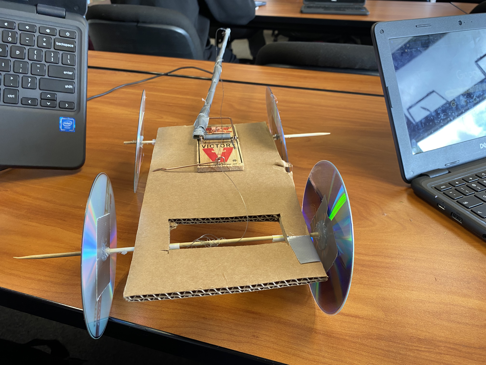

Engineering Notebook
Link

9/8/2022 I cadded Peanut Butter

9/16/2022 I built a paper boat to see how much weight could float on a single
piece of paper. It last longer than 5 minutes

For the past couple of weeks I along with kyle, and collin had to build a structure
that would pop a ballon. mr.poole called it a rue goldburg machine. We were then told
to combine what we had all built into one giant machine that would pop a ballon.
In the end it worked but we struggled throughout the entire project. We had a hard
time deciding what we wanted out machine to look like and making it work was another challenge.

10/7/22 this week we disected a laptop and rebuilt it after we were done. We would
then fill out a worksheet that we had to color and label the specific parts,
such as the motherboard cpu gpu etc. I had an easy time disecting the computer
but had trouble figuring out which pieces were which. I had never disected a
laptop before and I had a lot of fun doing this for the first time.

 10/24/22 Last week me and my partner Jordan had to create a rocket that would
launch the farthest in our class. We first had to think of our build of materials(BOM)
and decide what they would be used for. Next we had to create a cad of our rocket
so when it was time to build we knew what to do. After we would then build our
rocket the way we designed it from our cads. Friday was the day we would luanch our rocket.
10/24/22 Last week me and my partner Jordan had to create a rocket that would
launch the farthest in our class. We first had to think of our build of materials(BOM)
and decide what they would be used for. Next we had to create a cad of our rocket
so when it was time to build we knew what to do. After we would then build our
rocket the way we designed it from our cads. Friday was the day we would luanch our rocket.

10/26/22 this week I was placed into a group and we had to create a filter.
We were given a cotton ball, sand, pebbles, and rocks and a water bottle. We
first placed the cotton ball then the sand and then placed the pebbles and rocks
into the bottle. We then poured dirty water and it did come out cleaner than it
was going before however the water was still brown.

10/10/22
This week mr.poole would teach us about circuts and how they worker. We spent
our monday just leraning and understanding what a circut was and how it worked.
After we went on tinker cad and created our own circut following the slide mr.poole
uploaded. We made a basic circut with a 9v battery, breadboard, resistor, and an LED.
Then we created our own circut in real life with a breadboard and everything.
Me and my partner Noah spent the entire day making circuts. Then on challenge day
we wrote an entire essay analysis on wether we would learn more counting to 1 million
or taking a 1 year math class.We also had to prove our answer and convince mr.poole.
We agreed that it would be more beneficial to take a math class. However at the end
mr.poole said there was no way to prove within the year we would learn anything from
the math class. Also counting to 1 million was a goal with an objective end.

11/16/22
This week we would make code to sequence our arduino LEDs. Me and my partner Noah
used A website and just plugged in how long we wanted our delay. Next we showed
mr.poole because and he would set up the sequence because it wasn't able to work
on our chromebooks. I wasn't here for Thursday or Friday
12/2/22
This week we started off with learning about civil engineering and mr.poole
presented a slideshow. We then we assigned groups and I was assigned a group
with Ayaan and Dhruv. In this group we had to design a bridge using uncooked
noodles that can hold up a bucket of water. On our first day we had to create
a cad of our bridge design. We created 2 designs and tried to create our first
one. It was just a long strand of noodles that was very thick.

12/9/22
This was the last week of our bridge building and for this part of our design we
had to switch our bridge design from the long stand of glued noodles to a criss
cross stack of noodles that we stuck together. We decided to make this change
because we realized it would be a better use of our limited noodles and we would
get more value on reinforcing points of the bridge that would face the most strain.
After we finished our design we then had to present the process thoughts as we were
creating our bridge using a slideshow. Me ayaan and Druv presented each of our parts.
After we finsihed that we then got a chance to test our bridge. Our bridge was able
to hold a full cup of water.

1/13/22
This week in class mr.poole taught us about buisness engineering and about what
it does. I learned that buisness engineering is focussed on the buisness side
of engineering and how a new build works. The people who work in this field are
meant to test the new product and find issues and also try to improve on them.
After he taught us about it we then watched an episode of shark tank with someone
who was trying to sell a share of his cat puzzle company. He had to try and
advertise and get them interested in buying a part of his buisness. After we
watched that video our assignment was to create our own project where we are
to build a product and then present our product to mr.poole and a staff member
and convince them to invest and buy a stock of our buisness.
1/19/22
This week we did our presentations on our products. The way the presentations
went was mr.poole and his TA would judge and ask questions then make thier
offer to our products. He also allowed anyone in the class was also allowed. Me
and Kyle presented our project and the offer we took was $680,000 for 518 of our
company. This was the best offer in the class as the only other person asked for
$100,000 for %10 of our company. It was a success and me and kyle went back to our seats.

1/27/23
This week learned about oobleck which is a simi-solid substance. Its meant to
be a solid and slowly reshape into a liquid. Mr.poole then assigned our groups
and we would create our own oobleck trying to find the riht balance between water
and cornstarch. For me and my partner it worked and we took some photos. After
when me met again on wednesday mr.poole told us we were going to begin making
our next project. For the rest of the week we were to write 6 pages on what we would be building. I chose to do a mousetrapcar and have began writing. Next week is when we will begin actually building our new projects. For our project mr.poole wanted us to work alone or with only one other person. He says he wants this project to mostly be our own and so I decided to do this project alone. This will be my first project in this class that I have done alone.
2/3/23
This week I started off by making my tinkercad of my Mousetrap car. To create
my cad design I looked back on my project notes and tried to add everything that
would be part of my design. I began with my cardboard base and created the
mousetrap that would go on top of it. Next I added a long cylender that would
act as my lever that will be used to slower the acceleration of my mousetrap car.
Also I added another 2 cylenders that will be used to mount my wheels. Next I
created my disk wheels and added tubes that would act as my rubber bands that will
be used t reduced friction. On wednesday I wasn't able to show up to class because
of lockdown and evacuation. Thursday was challenge day I mr.poole had me partnered
with jordan and our job was to create the longest bridge we could with a pack of
sticky notes. We were not able to test it because we ran out of time and our bridge
of postage notes kept splitting apart which made it very difficult to form our bridge
and I wasn't able to get any photos of challenge day. For today I am going to finish
up with the Tinkercad of my mousetrap car.
2/10/23
This week we began by starting our construction of our projects.
On monday I was just trying to get all the materials I needed for
my project. I got staws for my dowels and cut our the base for my
mousetrap car from some cardboard mr.poole gave us. I also got some
CDs for the wheels of my car.The next day I got to constructing the
parts of my car. I connected my dowels I would be attaching my wheels
to. I also got my mouse trap that I would be attaching to my car. I
began setting up ways for my wheels to stand without causing friction.
After this week there are improvements I want to to make such as using wood
for my dowels as the straw ones seem too fragile for car. Thursday was
challenge day and for our challenge we were suppossed to create a structure
using sticks and rubber bands that would hold a balloon. After we were done
designing we would attach the structure to a meter stick and race everyone
else in our class. We didn't win the race as our design me jason and abdul build
slid off the meter stick. It was still a lot of fun tho.
2/17/22
This week while I was building my mousetrap car I would struggle to
attach my wheels. I didn't understand how I should attach them in a way
that would keep them straight. I was able to crete the body of my car
and it was successful. However I feel the body is a bit too thin and it
may break easily. I decided to attach extra cardboard to it so that
it will become stronger. To solve my wheel issue I would glue my wheels
to the dowels and attach the dowls to some plastic straws and attached
those plastic straws to the car so that the dowel and the wheels can roll
2/24/22
This week I finished building my mousetrap car however I found many
issues when I began testing. The first issue I encountered was when I attached
my doc fissure I only used hot glue to attach two sticks and when I wound up my
car the stick broke. I had to redo it and now it doesn't break but when I went to
test my car it worked fine for my first test. I then dicided to do another test and
when I did that my cars body broke. I took off the wheels and my mousetrap and for
next week I will be working to create a new body for my car. For my new body I chose
to use cardboard that was twice as thick.
3/2/23

This was our last week to work on building we only had until wednesday to finish
building our cars. I didn't want to break my car and make any huge changes so I only
tested my car and shortened my string. On thursday we had our competition and raced
our cars. We had 2 rounds and in the first race my car traveled the farthest and it went
really well. However the second round my cars wheels got stuck and broke so it
stopped driving.
3/10/23
This week was our last week before spring break and so we didn't do much since
we were all done with our mosuetrap cars as well. On monday we updated our websites. On
tuesday we had to create a google slideshow on our favorite field of engineering. I chose to
do electrical engineering because I think electrical engineering was the coolest and it also
pays really well. On wednesday we watched a mark wallber videos and the first video we watched
was his mousetrap car video which was also the same video I watched before I made my own
mousetrap car. On thursday we had a challenge day and our challenge was to create a boat
that was 7cm tall, 7cm wide, 14cm, long. The goal was for the boat to travel through a
gutter and see whos boat could travel the farthest. I didn't entirely understand the project
and thought we would be putting it down a gutter so I was just focussed on making it float.
3/24/23
For my spring break I just stayed home and I watched a lot of movies and shows. Movies like
The banshees of irensherin, everything everywhere all at once, kids. I also watched youtube
and twitch. Also on saturday I went with my father and sister and we tried a new ramen place
and also got ice-cream after. When I came back to school mr.poole told us about our final which
would be us creating a boat and us trying to get it to carry us. This project will take a lot
of time so we will be doing a small project for now. The project he assigned us was and egg
droping one. We had to create a build that would protect and egg from a fall from 2 stories.
For my group I will be working with Mingyu, collin, and Theo. We just finished out design on
our CAD so next week when mr.poole comes back from San Diego we will get our spplies and start
building.
3/31/22
This was out last week to work on our eggdrop project because on friday we would drop our eggs
and see who had built the best design. Me collin and mingyu would only test our project one time
because we felt we needed to add a few more things and we didn't have a lot of time. We also had
some trouble with our tape not sticking and we tried using some duct tape however mr.poole told us
that was cheating and that we had to put it away. One error we found in our project was our paraschutte
which on its way down would get tangled with itself so we had to find a way to stop it from
getting tangled from itself. We would add small thin strips of cardboard that would help keep
our paraschutte stay open and untanggled. When building it we all couldn't agree on how big the
cardboard srip should be and we ended up doing collins idea. Our project worked and our egg ended up
surviving.

4/7/22
Now we began our Final project which is a boat that we will need to create that can hold 2 people in
our group. We were able to choose our members and for me I am in a group with Kyle, Theo, Siuneh, and
Ayaan. For our project we started by building our CAD design. The one I built was the grey one and the
other one is a boat Ayaan had. We also went outside and measured our group members to see how big we
will need our boat to be. Me and seunieh will be in the boat. Also everyones websites went down so mr.poole
told us that he would need to recreate the cite and anyone who didn't git push would lose everything.
I only missed 3/31 and was able to just write it today.


4/14/23
This week we began to actually build our boat using all the materials we were given. We picked out our
cardboard and began to figure out how we would build it. We also had to go back to tinkercad and make
adjustments with our design that would better fit our project. We then ultimatly decided to completly
change our boat design and make a new boat. The design of our new boat is the image I had just uploaded.
For our new boat we are creating 2 small boats that will hold both me and siuneh. We will connect the
boats with a bunch of tubes. We also began building a smaller version of this boat design that we will
use to test and see if our project works and can float.